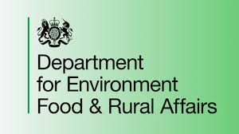

Expert guidance, from first idea to first harvest — and beyond.
Where every project begins
Before a single seed is planted or a single pound is invested, you need to know whether your vertical farm idea is viable — commercially, operationally, and logistically. We conduct in-depth market analysis to assess local and regional demand for your intended crops, identifying your most realistic customer base and benchmarking your proposition against the competitive landscape.
From there, we build robust financial models that account for capital expenditure, operational running costs, yield projections, and realistic revenue scenarios — giving you a clear view of break-even timelines and return on investment.
Location planning is a critical and often underestimated part of the process. Our team assesses potential sites for structural suitability, utility capacity, access and logistics, planning constraints, and proximity to your target market — ensuring that the building you commit to is genuinely fit for purpose before any money changes hands.
We prepare investor-ready business cases and full feasibility reports, giving you everything you need to move forward with confidence.
Engineering your growing environment
Once the decision to proceed is made, the quality of your farm's design will define its performance for years to come. Our design and engineering team combines horticultural expertise with technical precision to create growing environments that are productive, efficient, and built to last.
Detailed layouts that make the most of every available square metre, balancing growing capacity with the practical requirements of harvesting, processing, packing, and logistics.
Growing tier configuration, hydroponic or aeroponic system selection, LED lighting specification, climate control architecture, and nutrient delivery networks — all integrated into a coherent, AI-manageable whole.
Automation embedded from the outset. We plan not just how your farm grows crops, but how people move through and work within it — minimising labour bottlenecks and maximising throughput from day one.
Our credentials
SUNFARM Consultancy holds certification from DEFRA, the UK government body responsible for policy and regulation across food, farming, and the natural environment. Our certification reflects our commitment to operating within the highest standards of food safety, agricultural practice, and environmental responsibility.
For clients supplying into retail or hospitality supply chains, working with a DEFRA-certified consultancy provides an important layer of credibility and compliance confidence from day one.

Our B Corp compliance reflects a commitment to meeting rigorous standards of social and environmental performance, accountability, and transparency. In practice, this means: